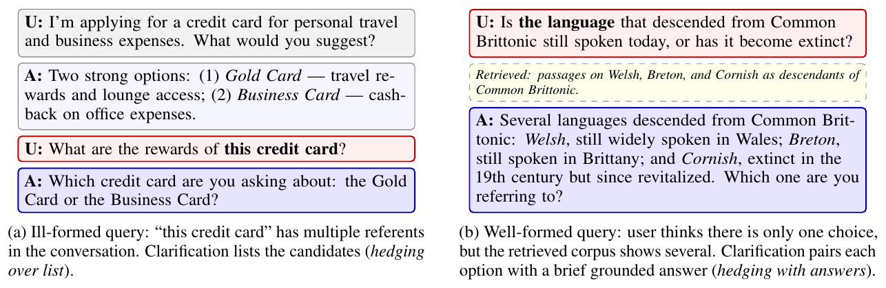
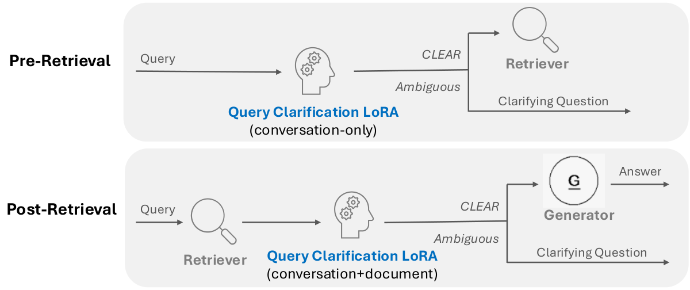

多轮 RAG 对话里，有两种问题应该先反问再回答。一种是问题本身指代不清：助手刚介绍了两张信用卡，用户接着问"这张卡有什么奖励"。另一种更隐蔽：问题字面上很明确，但检索回来的文档里有好几个都说得通的答案，比如问"由共同布立吞语演变来的那种语言现在还有人说吗"，文档里同时出现了威尔士语、布列塔尼语和康沃尔语。IBM Research 为此构建了约 3,900 条样本的数据集 ClariEdge，其中专门放进了"看起来含糊、但根据上文其实能确定指代"的难负例，再用它给 3B 规模的 Granite 模型做 LoRA 微调，让同一个小模型既判断要不要反问，又在需要时写出列有候选项的反问。结果是 Granite-4.1-3B LoRA 的判断准确率达到 96.6%，只用提示词的模型里最好的 GPT-4o 是 79.4%，GPT-5.6 Sol 只有 73.1%。去掉难负例重新训练后，难负例这一类的准确率从 87.3% 掉到 35.4%，这说明模型学会"不反问"主要靠的就是这批样本。

1. 问题：什么时候该反问，反问时该说什么
已有的数据集各自只覆盖了这件事的一部分。CLAMBER 评估的是孤立的单句问题，没有对话历史，也没有检索文档；AmbigQA 只要检索出多个事实答案就把问题算作含糊，可像"1922 年谁控制了意大利政府"这种问题，今天的模型会直接回答"墨索里尼和法西斯党"，根本不需要反问；ClariQ 和 Abg-CoQA 有对话，但不把检索结果当成判断依据。真实的 RAG 助手需要的是把对话和文档放在一起判断。
真正难的地方在另一头。很多问题表面上含糊，其实上文已经说清楚了。用户前面说过"我在东北分部工作"，接着问"这个分部的服务什么时候开放"，这里的"这个分部"没有歧义。模型如果连这种问题也反问，用户每问一句都要被追问一次，体验比答错还糟。所以这个任务的关键不是"找出含糊问题"，而是在真含糊和假含糊之间画出准确的边界。论文的数据设计、消融实验和跨领域测试，都是围绕这条边界展开的。
2. 数据集怎么造
2.1 三类样本
对话来自 MTRAG（IBM 此前发布的多轮 RAG 评测集）的四个领域：ClapNQ（维基百科）、Cloud（技术文档）、FiQA（金融）、Govt（政府网站）。样本分三类：
| 类别 | 含义 | 训练 | 测试 | 合计 |
|---|---|---|---|---|
| Ambiguous | 确实需要反问 | 967 | 104 | 1,071 |
| CLEAR-random | 普通的明确问题，作为容易的负例 | 1,800 | 200 | 2,000 |
| CLEAR-hard | 表面含糊、但根据上文可以确定 | 742 | 79 | 821 |
含糊样本有两个来源。一是标注员拿到某个实体类型及其实例（比如"公园"下面有好几个州立公园），故意写一个不点名的问题，如"公园几点开门"，再由程序把它接到一段已有的多轮对话末尾。其中约 75% 接在同主题对话后面，约 25% 接在不相关的对话后面，模拟用户突然换话题。接上之后作者再人工检查一遍，剔除那些因为上文恰好点了名、反而变得不含糊的样本。二是让 Mistral-Large-3 在 793 段对话上，针对"对话里出现过多个实例的实体类型"生成提问；对 228 段更长的对话（超过 6 轮、含多种实体类型），改成让模型先一步步写出推理，再自己检查写出的提问是否真的无法从上文判断指的是哪一个，不行就改写，反复几轮。两种方式生成的提问最后都由人工逐条判断：确实含糊的才算含糊样本，能从上文判断的归为不含糊。
2.2 难负例来自生成模型的错误
第二条路线生成的问题，有相当一部分其实并不含糊。附录里的一个例子是：上一轮助手在介绍 bots（网络机器人），用户问"它们有什么能力"，这里的"它们"按指代消解只能是 bots。Mistral-Large-3 把这类问题当作含糊问题生成出来，说明生成模型自己就分不清这条边界。作者人工审核每一条：真含糊的归入 Ambiguous，能从上文确定的归入 CLEAR-hard。审核中还发现了几种常见的假含糊：比较类问题（"哪一款电池续航最好"是在比较全部候选，不是指其中某一个）、普通的追问，以及"价格？"这样的简短关键词提问。也就是说，CLEAR-hard 本质上是把生成模型的误判收集起来，当作训练信号。
需要注意的是，难负例只在不带检索文档的场景里构造。检索后的场景没有对应的难负例，比如"文档里看似有几个答案，其实可以合并成一个回答"这种情况，数据集没有覆盖。
2.3 参考反问
每条含糊样本配一条参考反问，按候选数量分三种写法：2–3 个候选时逐个列出并附一句简短答案；4–8 个时只列名字；候选太多或无法枚举时，直接问"您指的是哪个某某"。参考反问由 Mistral-Large-3 起草，再人工修正。两位作者对 80 条测试样本（20 条难负例、40 条随机样本、20 条含糊样本）独立标注是否含糊，Cohen's Kappa 为 0.875，4 处分歧全在 CLEAR-hard 类，又一次说明这条边界连人都不容易判。
3. 模型和部署方式
作者在 3,509 条训练样本上，分别给 Granite-4.0-micro、Granite-4.1-3B 和 GPT-OSS-20B 做 LoRA 微调，秩为 32，α 为 64，同时作用于 attention 和 MLP 层，单张 H100 训练，最多 15 轮并按验证集早停。模型输入是对话历史加可选的检索文档，输出一个 JSON：问题明确就输出 CLEAR（表示无需反问），否则输出一句反问。

部署时同一个 LoRA 用在两个位置：检索前只看对话，决定要不要先反问再检索；检索后看对话加文档，决定要不要在生成答案前反问。这样每轮最多多出两次小模型调用。好处是 3B 模型的延迟和成本都很低，检索前那一次还能省掉一次没必要的检索。
对照组是七个只用提示词的模型：GPT-5.6 Sol、GPT-4o、GPT-OSS-120B、GPT-OSS-20B、Granite-4.1-30B、Granite-4.1-3B、Granite-4.0-micro。它们拿到完全相同的系统提示词，里面写明了三种反问写法和"只用上下文里出现的信息"的要求。因为 Granite-4.1-3B 同时有提示词版和 LoRA 版，两者差多少，就能直接归到训练本身，而不是模型大小。
4. 实验结果
4.1 要不要反问
| 模型 | Ambiguous | CLEAR-random | CLEAR-hard | 总体 | 检索前总体 | 检索后总体 |
|---|---|---|---|---|---|---|
| Granite-4.1-3B LoRA | 91.3 | 99.5 | 96.2 | 96.6 | 93.0 | 100.0 |
| Granite-4.0-micro LoRA | 84.6 | 98.5 | 87.3 | 92.4 | 85.6 | 99.0 |
| GPT-OSS-20B LoRA | 76.9 | 98.5 | 86.1 | 90.1 | 82.4 | 97.4 |
| GPT-4o | 48.1 | 90.5 | 92.4 | 79.4 | 81.3 | 77.6 |
| GPT-5.6 Sol | 93.3 | 72.5 | 48.1 | 73.1 | 68.4 | 77.6 |
| GPT-OSS-120B | 80.8 | 83.0 | 65.8 | 78.9 | 75.4 | 82.1 |
| GPT-OSS-20B | 90.4 | 72.5 | 58.2 | 74.4 | 72.7 | 76.0 |
| Granite-4.1-3B（提示词） | 26.9 | 88.0 | 55.7 | 64.8 | 59.4 | 69.9 |
（单位 %）这张表最值得看的不是总体分数，而是提示词模型的错误方向正好分成两派。GPT-5.6 Sol 和 GPT-OSS-20B 是"爱反问"的一派：含糊类准确率在 90% 以上，但难负例类只有 48.1% 和 58.2%，连普通明确问题也有近三成被误判，大约每四个正常问题就有一个会被追问。GPT-4o 和小 Granite 是"不反问"的一派：GPT-4o 的难负例类高达 92.4%，含糊类却只有 48.1%。两个前沿闭源模型偏向相反，说明这种偏差不是模型越大就越好，而是提示词本身没有把边界讲清楚。
检索后的结果更说明问题。GPT-4o 在检索后场景里含糊类准确率只有 32.6%，也就是文档里明明摆着几个答案，它多数时候还是直接作答。两个 Granite LoRA 在这里分别达到 100% 和 99.0%。不过检索后子集没有难负例，只有含糊样本和普通明确问题，所以这里的满分是在相对容易的分布上取得的，不能和检索前的分数直接比较。检索前才是难点：Granite-4.1-3B LoRA 的含糊类在检索前只有 84.5%，因为没有文档时，模型只能靠语言线索去区分真含糊和可消解的指代。
4.2 反问里的候选列得对不对
反问的质量用"候选项"来衡量：精确率是生成的候选里正确的比例，召回率是参考候选被覆盖的比例。判断交给 Llama-3.3-70B，分四步，各用一个提示词：反问是不是开放式的；从反问里抽出列出的候选项；每个候选项和含糊的那个实体是否相关；它是否在参考候选里。一个候选项只要出现在参考答案里、能在检索文档里找到依据，或者符合常识和用户意图，就算正确。这些指标只在模型判对为含糊的样本上计算。
| 模型 | 判对的含糊样本 | 精确率 | 召回率 | F1 |
|---|---|---|---|---|
| Granite-4.1-3B LoRA | 95/104 | 92.7 | 85.7 | 89.0 |
| Granite-4.0-micro LoRA | 88/104 | 91.8 | 87.7 | 89.7 |
| GPT-5.6 Sol | 97/104 | 92.6 | 73.4 | 81.9 |
| GPT-OSS-20B | 94/104 | 93.3 | 70.7 | 80.5 |
| Granite-4.1-30B | 82/104 | 88.7 | 87.1 | 87.9 |
| GPT-4o | 50/104 | 81.3 | 69.8 | 75.1 |
（单位 %）提示词模型的精确率和 LoRA 差不多，差距几乎都在召回率上。也就是说，它们列出的候选大多是对的，但经常漏掉同样成立的选项，检索后场景尤其明显，GPT-4o 和 GPT-OSS-120B 的检索后召回率都只有 64% 左右。读这张表时要连着第一列看：GPT-4o 的 F1 只建立在 50 条样本上，另外 54 条它根本没反问。F1 高但判对的样本少，对用户来说价值有限。
这套指标本身也有两处宽松的地方。其一，候选只要符合常识就算正确，不必出现在参考答案里。附录的例子中，模型列出了参考里没有的坎布里亚语，精确率仍然记满分。其二，对开放式的参考反问（"您指的是哪个公园"），只要生成的反问里也带有开放式成分，召回率就记满分。前者合理，后者对"列几个候选再加一句'还是别的'"的写法比较有利。
4.3 去掉难负例会怎样
为了确认难负例的作用，作者用同样的数据再训练一个 Granite-4.0-micro LoRA，唯一的区别是去掉全部 CLEAR-hard 样本。
| 训练数据 | Ambiguous | CLEAR-random | CLEAR-hard | 总体 | 判对的含糊样本 | F1 |
|---|---|---|---|---|---|---|
| 全部 | 84.6 | 98.5 | 87.3 | 92.4 | 88/104 | 89.5 |
| 去掉难负例 | 97.1 | 97.5 | 35.4 | 84.6 | 101/104 | 84.9 |
去掉难负例以后，模型几乎对所有表面含糊的问题都反问，所以含糊类准确率反而升到 97.1%，判对的含糊样本也从 88 条增加到 101 条，但难负例类跌到 35.4%。普通明确问题几乎不受影响（98.5% 对 97.5%），说明模型并不是整体变得爱反问，而是专门在"有代词、有多个实体"的问题上失去了判断。反问质量的 F1 也随之下降了 4.6 个点，作者的解释是，学会了边界的模型在决定反问时，对候选的把握也更准。
4.4 换到没见过的领域
作者又从 MTRAG-UN 取了银行和电信两个新领域，各约 230 条样本，按同样流程构造难负例和含糊样本。Granite-4.0-micro LoRA 的总体准确率分别是 92.6% 和 90.2%，和领域内的 92.4% 基本持平，说明它学到的是判断边界的能力，而不是四个训练领域的措辞习惯；提示词模型最高只有 71.9%（GPT-OSS-120B，电信）。两派错误在新领域里依然存在，而且"爱反问"的一派更严重：GPT-5.6 Sol 在银行领域的难负例类只有 29.2%，Granite-4.1-30B 只有 27.8%。
反问质量上，银行领域的 GPT-4o（89.82%）和 Granite-4.1-30B（86.61%）的 F1 高于 LoRA（81.56%），但它们判对的含糊样本只有 42/79 和 60/79，LoRA 是 69/79。这意味着它们的高 F1 是在更少、可能也更容易的样本上算出来的，所以只看 F1 会高估一个很少反问的模型。
5. 局限和怎么读这些数字
作者承认的局限有两条：模型只生成一次反问，不做多轮逐步澄清；数据和评估都只有英文。除此之外还有几点值得注意。
第一，测试集小。含糊类只有 104 条，难负例类只有 79 条，一条样本就相当于 1 到 1.3 个百分点，所以表中模型之间几个点的差距，不宜过度解读；但 LoRA 和提示词模型之间十几到三十个点的差距，在这个样本量下是可靠的。第二，难负例只覆盖检索前场景，检索后的 100% 准确率是在没有难负例的分布上测的。第三，反问质量完全由一个大模型打分，论文没有报告这个打分模型和人工判断的一致程度；正文验证的只是参考反问：两位作者对 20 条含糊样本各写一条反问，词重叠 F1 为 0.774，人工检查认为两版的实体和候选一致、只是措辞不同。所以参考答案是可靠的，打分模型是否同样可靠则没有验证。第四，提示词基线只用了一套提示词，没有做少样本示例或针对性的提示词调优，"爱反问"和"不反问"两派偏差里，有一部分也许能靠改提示词缓解。
6. 实践意义
做多轮 RAG 助手时，"要不要反问"可以交给一个 3B 规模的 LoRA 小模型，在检索前后各调用一次，而不必依赖大模型加提示词。从这篇论文里能带走的经验主要是数据上的：训练集里必须有"看起来含糊、但上文已经说清楚"的反例，而这些反例最方便的来源，就是让大模型去生成含糊问题，再把它判错的那些人工挑出来。如果自己的场景里检索后的假含糊也很常见，比如多篇文档其实讲的是同一件事，就需要另外补这一类难负例。ClariEdge 已在 Hugging Face 公开（ibm-research/ClariEdge）。
讨论
欢迎补充实验细节、复现经验或不同看法。需 GitHub 登录。
正在加载讨论…